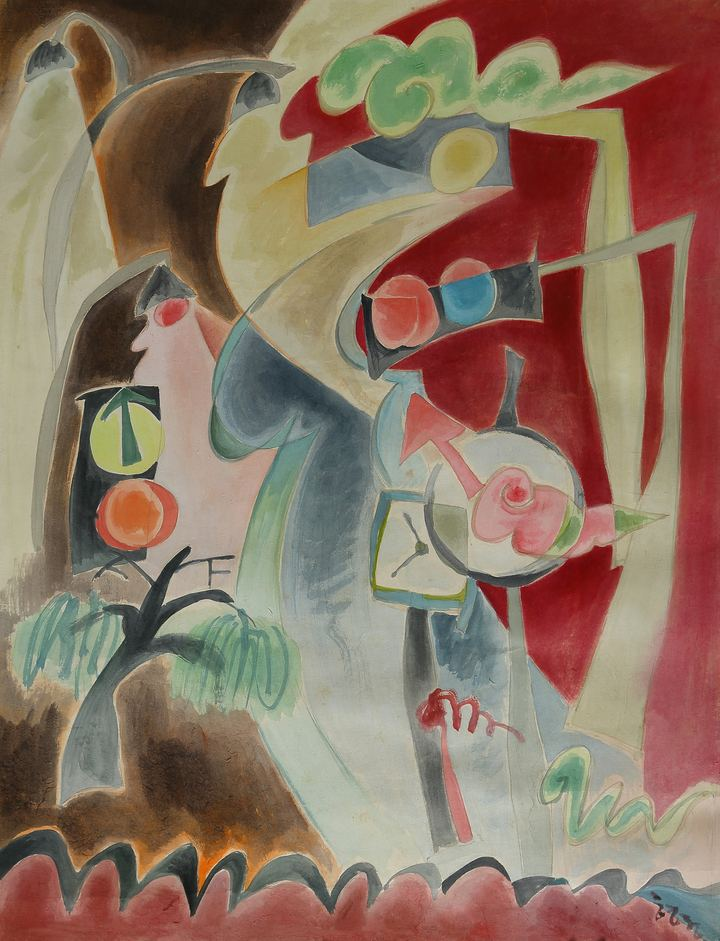

What It Means to Grow Old in the City도시에서 늙어 간다는 것

I was born in the city and have grown old in the city my entire life. What does it mean to age within the modern metropolis? Amidst the splendid lights, endless forest of buildings, and constantly shifting trends and technology, we gradually grow old. And we strive to live as if forgetting that fact, always pretending to be young.
This painting captures precisely that inner self of the city dweller. The city lights are brilliant but lonely, and though there are many people, they are solitary. A person leaning against a wall, a shadow gazing from afar, the void between the clouds and neon signs. I combined such scenes to paint a portrait of the city.
Aging is not merely about the passage of time. It is about things once familiar becoming strange, and seeing the world at my own unique pace. This painting speaks directly to that 'difference in speed'. The viewpoint of the one who walks slowly in a rapidly spinning world. That is the true meaning of growing old that I have discovered.
나는 도시에서 태어나 평생 도시에서 늙어 왔다. 현대의 대도시 속에서 나이 든다는 것은 무엇을 의미할까? 화려한 불빛과 끝없는 빌딩 숲, 끊임없이 바뀌는 유행과 기술 속에서 우리는 조금씩 늙어 간다. 그리고 그 사실을 잊은 듯, 늘 젊은 척하며 살아가려 애쓴다.
이 그림은 바로 그 도시인의 내면을 담고 있다. 도시의 불빛은 찬란하지만 외롭고, 사람은 많지만 저마다 혼자다. 벽에 기대선 사람, 멀리서 바라보는 그림자, 구름과 네온사인 사이의 공허. 나는 그런 장면들을 엮어 도시의 초상을 그렸다.
늙는다는 것은 단지 시간이 흐르는 것만이 아니다. 익숙했던 것들이 낯설어지고, 나만의 속도로 세상을 보게 되는 것이다. 이 그림은 바로 그 '속도의 차이'를 말한다. 빠르게 돌아가는 세상 속에서 천천히 걷는 이의 시선. 그것이 내가 발견한 늙어 감의 진정한 의미다.